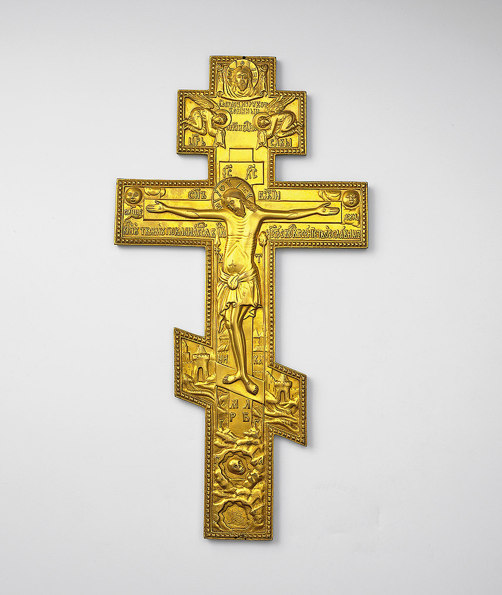
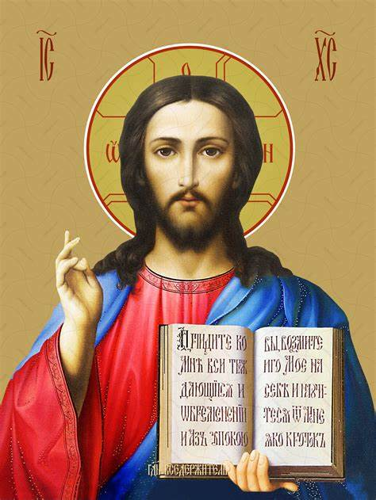
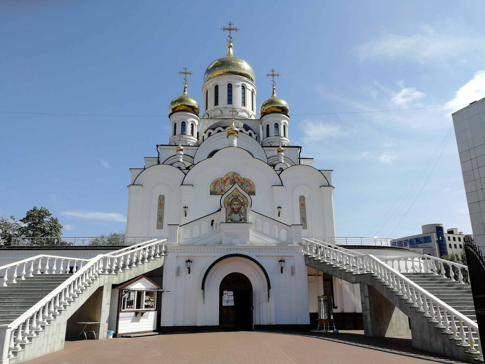

Основные термины и понятия христианства
Ад – мифологическое пространство, которое, согласно христианской традиции, создано после измены Богу Люцифера, ангела света, его извержения в качестве Сатаны с неба в недра земли с сонмом слуг – падших ангелов.
Алтарь – восточная часть храма, где духовенство совершает свои священнодействия.
Анафема (греч. anathema – проклятие) в христианстве – церковное проклятие, отлучение от церкви, считающееся высшей карой.
Аутодафе (исп. и португ. auto da fe – акт веры) – церемония приведения в исполнение приговора инквизиции – наказание плетьми или сожжение на костре.
Бог – верховная сущность, наделенная высшим разумом, абсолютным совершенством, всемогуществом, сотворившая мир и управляющая им.
Булла (лат. bulla – печать) – наиболее важный папский документ, содержащий обращение, постановление или распоряжение. Пишется на латинском языке.
Варфоломеевская ночь – массовое избиение французских протестантов (гугенотов) католиками, начавшееся в Париже в ночь на праздник св. Варфоломея 24 августа 1572 года.
Вериги – кандалы, цепи, оковы. Металлические предметы, которые носили религиозные аскеты для «укрощения плоти».
Геенна (греч. geenna) – в иудаизме и христианстве одно из обозначений ада.
Грех – по религиозным представлениям, нарушение в мыслях или действием воли Бога.
Евангелие (греч. euaggelion – благая весть) – книги ранних христиан, повествующие об учении Иисуса Христа и его жизни.
Индульгенция (лат. indulgentia) – папская грамота, свидетельство об отпущении как совершенных, так и не совершенных еще грехов, выдаваемая за деньги или за особые заслуги перед католической церковью.
Евангелие (греч. euaggelion – благая весть) – трибунал католической церкви, созданный в XIII в. для борьбы с ересью.
Символика христиан:

Бог в представлении христиан:

Христианский храм:
